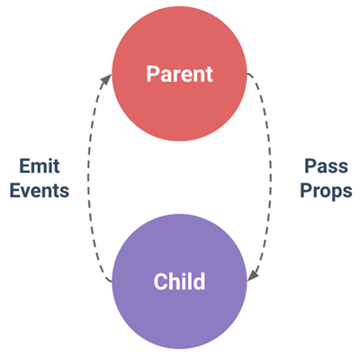

부모 컴포넌트에서 자식 컴포넌트에게 데이터를 전달하는 방법을 연습한다.
작업 순서
1. Vue 인스턴스를 만든다.
2. template 속성 설정
component-top 의 template 속성에는 <p>{{ propsdata }}</p> 만 설정.
component-bottom 의 template 속성에는 <p>{{ propsdata }}</p> 만 설정.
3. Vue 인스턴스에서 child-component 로 메시지를 전달 할 수 있게 설정하다.
<!-- 팁 : 오른쪽에서 왼쪽으로 속성을 읽으면 더 수월합니다. -->
<child-component v-bind:propsdata="message"></child-component>
표시할 데이터:
"Top message!!! passed from Parent Component"
"Bottom message!!! passed from Parent Component"
[참조]page 74-75
